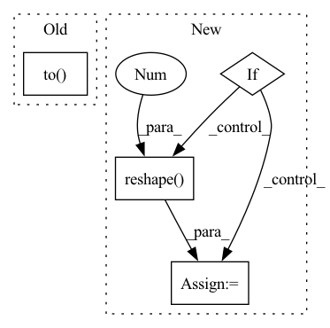

Pattern ID :41916
Before Change
def get_codebook_entry(self, indices, shape):
// shape specifying (batch, height, width, channel)
// TODO: check for more easy handling with nn.Embedding
min_encodings = torch.zeros(indices.shape[0], self.n_e).to( indices)
min_encodings.scatter_(1, indices[:,None], 1)
// get quantized latent vectors
z_q = torch.matmul(min_encodings.float(), self.embedding.weight)After Change
def get_codebook_entry(self, indices, shape):
// shape specifying (batch, height, width, channel)
if self.remap is not None:
indices = indices.reshape(shape[0],-1) // add batch axis
indices = self.unmap_to_all(indices)
indices = indices.reshape(-1 ) // flatten again
// get quantized latent vectors
z_q = self.embedding(indices)In pattern: SUPERPATTERN
Frequency: 3
Non-data size: 4
Instances Fragment ID: 117468115
Project Name: tgisaturday/dalle-lightning
Commit Name: d921f1da0c5eb11dac01cd1facad821547c250d4
Time: 2021-07-07
Author: jamesk1228@gmail.com
File Name: taming/modules/vqvae/quantize.py
M Class Name: VectorQuantizer
N Class Name: VectorQuantizer
M Method Name: get_codebook_entry(3)
N Method Name: get_codebook_entry(3)
M Parent Class: nn.Module
N Parent Class: nn.Module
M File Name: taming/modules/vqvae/quantize.py
N File Name: taming/modules/vqvae/quantize.py
M Start Line: 87
M End Line: 91
N Start Line: 311
N End Line: 317
Before Change
attention_mask = attention_mask.to(self.device)
token_type_ids = token_type_ids.to(self.device)
label_vectors = label_vectors.to(self.device)
model_output = self.model(token_ids, attention_mask, token_type_ids).to( self.device)
if self.configs["use_multilabel_categorical_cross_entropy"]:
model_output = model_output.reshape(batch_size * self.data_manager.num_labels * 2, -1)
label_vectors = label_vectors.reshape(batch_size * self.data_manager.num_labels * 2, -1)After Change
self.optimizer.zero_grad()
logits, _ = self.model(token_ids, attention_mask, token_type_ids)
if self.configs["use_multilabel_categorical_cross_entropy"]:
if self.configs["model_type"] == "bp":
num_labels = self.num_labels * 2
else:
num_labels = self.num_labels
model_output = logits.reshape( batch_size * num_labels, -1 )
label_vectors = label_vectors.reshape(batch_size * num_labels, -1)
loss = self.loss_function(model_output, label_vectors)
else:
if self.configs["model_type"] == "bp": Fragment ID: 117468116
Project Name: stanleylsx/entity_extractor_by_binary_tagging
Commit Name: eb5b1ff92de74222cda1b2e33c046b03b036c451
Time: 2022-06-08
Author: gzlishouxian@gmail.com
File Name: engines/train.py
M Class Name: Train
N Class Name: Train
M Method Name: train(1)
N Method Name: train(1)
M Parent Class:
N Parent Class:
M File Name: engines/train.py
N File Name: engines/train.py
M Start Line: 72
M End Line: 90
N Start Line: 73
N End Line: 99
Before Change
num_float_field = float_fields.shape[-1]
// [batch_size, max_item_length, num_float_field]
index = (
torch.arange(0, num_float_field)
.unsqueeze(0)
.expand_as(float_fields)
.long()
.to( self.device)
)
// [batch_size, max_item_length, num_float_field, embed_dim]
float_embedding = self.float_embedding_table[type](index)
float_embedding = torch.mul(float_embedding, float_fields.unsqueeze(-1))After Change
if float_fields is None:
return None
if type == "item":
embedding_shape = float_fields.shape[:-1] + (-1,)
float_fields = float_fields.reshape(-1 , float_fields.shape[-2], float_fields.shape[-1])
float_embedding = self.float_embedding_table[type](float_fields)
float_embedding = float_embedding.view(embedding_shape)
else:
float_embedding = self.float_embedding_table[type](float_fields)
Fragment ID: 117468117
Project Name: rucaibox/recbole
Commit Name: 3ea75a6e4e9102223ea8fb80f9880b2bb423fbf1
Time: 2022-07-16
Author: 1204216974@qq.com
File Name: recbole/model/layers.py
M Class Name: ContextSeqEmbAbstractLayer
N Class Name: ContextSeqEmbAbstractLayer
M Method Name: embed_float_fields(4)
N Method Name: embed_float_fields(4)
M Parent Class: nn.Module
N Parent Class: nn.Module
M File Name: recbole/model/layers.py
N File Name: recbole/model/layers.py
M Start Line: 917
M End Line: 932
N Start Line: 955
N End Line: 966